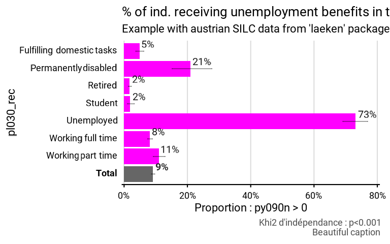

Function to set global options for fonctionr
Usage
fonctionr_options(
total = NULL,
prop_method = NULL,
reorder = NULL,
show_ci = NULL,
show_n = NULL,
show_value = NULL,
show_labs = NULL,
dec = NULL,
pal = NULL,
col = NULL,
font = NULL,
coef_font = NULL,
caption = NULL,
theme = NULL,
lang = NULL,
erase_all = FALSE
)Arguments
- total
To write
- prop_method
prop_method
- reorder
To write
- show_ci
To write
- show_n
To write
- show_value
To write
- show_labs
To write
- dec
To write
- pal
To write
- col
To write
- font
Font used in the graphic. See load_and_active_fonts() for available fonts.
- coef_font
A multiplier factor for font size
- caption
To write
- theme
To write
- lang
The language of the indications on the chart. Possibilities: "fr", "nl", "en". Default is "fr".
- erase_all
TRUE erases all the options. Default is FALSE.
Examples
# We set settings for font type and font size
fonctionr_options(font = "Montserrat", coef_font = 1.5)
#> $fonctionr.options
#> $fonctionr.options$font
#> [1] "Montserrat"
#>
#> $fonctionr.options$coef_font
#> [1] 1.5
#>
#>
# Loading of data
data(eusilc, package = "laeken")
# Recoding eusilc$pl030 into eusilc$pl030_rec
eusilc$pl030_rec <- NA
eusilc$pl030_rec[eusilc$pl030 == "1"] <- "Working full time"
eusilc$pl030_rec[eusilc$pl030 == "2"] <- "Working part time"
eusilc$pl030_rec[eusilc$pl030 == "3"] <- "Unemployed"
eusilc$pl030_rec[eusilc$pl030 == "4"] <- "Student"
eusilc$pl030_rec[eusilc$pl030 == "5"] <- "Retired"
eusilc$pl030_rec[eusilc$pl030 == "6"] <- "Permanently disabled"
eusilc$pl030_rec[eusilc$pl030 == "7"] <- "Fulfilling domestic tasks"
# Computation, taking sample design into account
eusilc_prop <- prop_group(
eusilc,
group = pl030_rec,
prop_exp = py090n > 0,
weight = rb050,
title = "% of ind. receiving unemployment benefits in their hh",
subtitle = "Example with austrian SILC data from 'laeken' package"
)
#> Warning: NAs introduced by coercion
#> Warning: Parametres actifs dans fonctionr_options(): font, coef_font
#> Input: data.frame
#> Sampling design -> ids: `1`, weights: rb050
#> 2720 observations removed due to missing group
#> 0.0222909450531006
#> Variable(s) detected in prop_exp: py090n
#> 0 observations removed due to missing value(s) for the variable(s) in prop_exp
# Results in graph form
eusilc_prop$graph
#> Warning: Removed 7 rows containing missing values or values outside the scale range
#> (`geom_text()`).
#> Warning: Removed 1 row containing missing values or values outside the scale range
#> (`geom_text()`).
